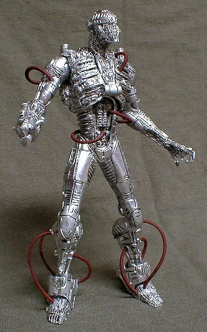

| 
|
Brainiac was made from a Spawn Interlink LA-6 figure. This custom is mostly a repaint. I removed all of the accessories and spray-painted him silver. I then did a careful black wash to bring out the details in the sculpt, of which there are many. I was going for a cold, clinical look, similar to the Crisis on Infinite Earths version. The close-up below shows the fine detail in the figure. The figure had a gun for a right hand, which I thought was out-of-character. I cut the gun down and made it into an evil probe. The figure also had some sort of spidery accessories which I reworked in to a mechanical claw accessory. Without the claw, the figure has 15 points of articulation. With the claw it has 24! I also re-routed his wiring to add some color and variety to the custom. |